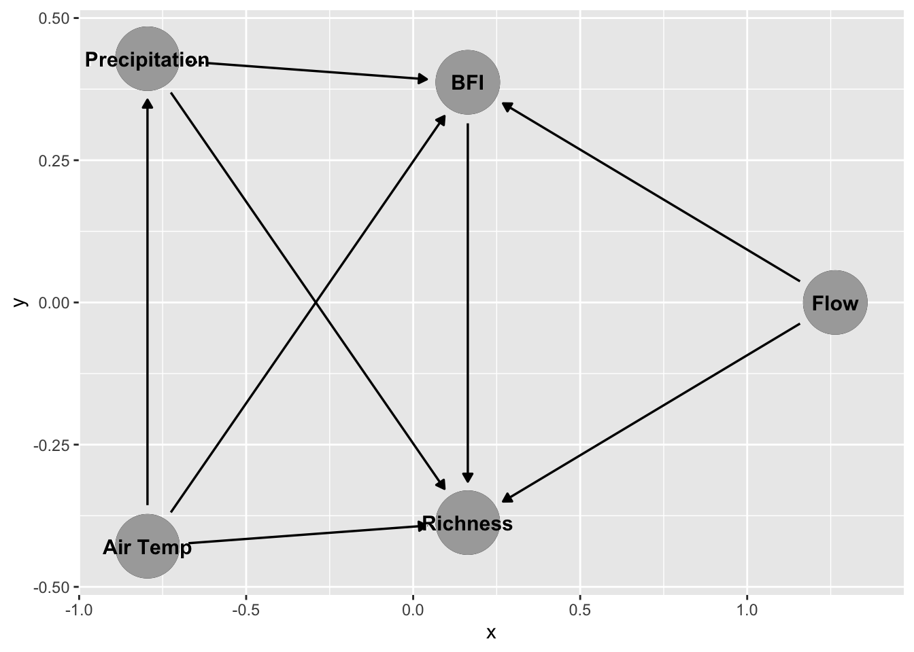

set.seed(123)
library(tidyverse)
library(janitor)
library(here)
library(dagitty)
library(ggdag)
library(MASS)Fish Species Richness In US Northwest
Background
Freshwater fish presence and species richness is a vital metric for stream health. Stream health is very important to the economies for Montana, Wyoming, Idaho and the Dakotas. As global heating trends cause decreases in snowfall and increases in air temperature, these streams are at risk, and so are the fish that swim in them. In order to protect stream life, it’s important that we research the relationships between biotic factors and their environment.
Question
How is freshwater fish diversity affected by precipitation in Northwest rivers and streams?
Data
The University of Wyoming Stream Species Dataset is a species presence dataset containing presence locations for 116 freshwater fish species in Wyoming, Montana, and the surrounding states. It contains data from 40,490 unique sample events (location, month, year). Data was derived from multiple sources (Table 1) and limited to fish occurrences in rivers and streams. This dataset was compiled by combining data from agency databases, the Global Biodiversity Information Facility, university theses, peer-reviewed literature, grey-literature reports, and unpublished data from the University of Wyoming. Please note that absence (0) values only indicate that a species was not recorded by observers and should not be used as true absences in analyses.
## Map of shapefile showing all riversMethods
I’ll be modeling the relationship between precipitation and fish species richness using a negative binomial model.
Variable and DAG
Precipitation: Mm precipitation recorded during the month of observation
Base Flow Index (BFI): Expression of groundwater vs. surface water flow in for each water body
Air Temperature: Average air temperature during the month of August for each river. NOT For each year. These temperatures are a regional average over many years.
Flow: Many-year average flow rate during the month of August for each river.
Richness: Number of species observed in a given stream
Dag
dag <- dagitty('
dag {
"Precipitation" -> "BFI"
"Air Temp" -> "BFI"
"Air Temp" -> "Precipitation"
"Flow" -> "BFI"
"Precipitation" -> "Richness"
"BFI" -> "Richness"
"Flow" -> "Richness"
"Air Temp" -> "Richness"
}
')
# Plot Dag
ggdag(dag) +
geom_dag_point( color = "darkgrey") +
geom_dag_text(color = "black")
(((Descriptio of DAG)))
Reading in our fish data
This data set has over 40,000 entries of varying quality dating back to 1800. So we’ll want to filter some of that information out. For this analysis, I’ll just be looking at the last available century of data. My select() function below removes some of the columns that are not necessary for this analysis
fish_raw <- read_csv(here("data","StreamSpeciesDataset_v1_1_3_edited.csv")) %>%
clean_names() %>%
filter(year >= 1972, year <= 2022) %>% # 50 Years of data
filter(month %in% c("8"))Right now, our data table has one column for each species of fish, with a value of 1 or 0 indicating presence or non-presence. For analysis like these, ‘long’ formatted data is better. So we’re going to pivot our columns for each species into two columns, one for ‘species’ and one for ‘presence’.
(((Note for Henry: Turn this into a list so you can hide all the species names)))
# Pivot longer so that each species has it's own row
fish_long <- pivot_longer(fish_raw,
cols = c("bct", "crct", "crrb", "eb",
"ll", "bull", "gr", "onc",
"tgt", "spk", "srct", "wct",
"yct", "cut", "cis", "lwf",
"gt", "rb", "kok", "pwf",
"mwf", "lt", "lmb", "smb",
"bg", "pump", "gsun", "blcr",
"whcr", "wbs", "rkb", "nrbdc",
"bmsh", "cmsh", "lsch", "rdsh",
"rtch", "lkch", "hhch", "gila",
"smmn", "wsmn", "brmn", "plmn",
"ws_plmn", "stch", "fsdc", "sfch",
"npdc", "str", "pea", "gsh",
"emsh", "spsh", "sdsh", "fhmn",
"fhch", "spdc", "lndc", "rssh",
"crch", "gdf", "carp", "blbh",
"ylbh", "ccat", "scat", "ling",
"drum", "gar", "pkf", "ptmn",
"ge", "pf", "iowa", "jdt",
"odt", "yp", "sgr", "we",
"np", "tim", "rmcot", "mcot",
"colcot", "pcot", "slcot", "tcot",
"spcot", "cfcot", "rbsm", "brsb",
"wstrg", "pstrg", "sstrg", "rcsu",
"lnsu", "wsu", "lssu", "mtsu",
"plsu", "bsu", "smbuf", "bmbuf",
"bhsu", "gsu", "b_hx_wsu", "fmsu",
"f_mx_bhsu", "f_mx_wsu", "utsu", "qbk",
"shrh", "trpr", "gam", "gzs"
),
names_to = "species_0",
values_to = "present_0")Now we still have about 65 columns that we don’t need. Let’s clean it up a bit and only get the columns we want.
# Select relevent columns
fish_long_filtered <- fish_long %>%
dplyr::select(gnis_name, month, year, state, precip, air_aug, bfi, flow_aug, present_0, species_0)Data filtering
We want a sum of the number of species observed per river per August of each year, but we don’t want any duplicates of species being counted in the richness, so let’s get a unique richness count for each summer fishing season.
aug_richness <- fish_long_filtered %>%
group_by(gnis_name, year) %>%
summarize(richness = sum(present_0),
mean_precip = mean(precip),
mean_bfi = mean(bfi),
air_aug = mean(air_aug),
flow_aug = mean(flow_aug))Now we have totals of the number of species observed during August of each year for each River in our dataset. We also have average BFI and Precipitation for July and August, and regional averages August air temperature and flow rate across all years.
Then I want to look at the relationship between richness and precipitation
Since our richness is a count variable, we’re going to use a Negative Binomial model. Let’s take a look.
\[ Richness_{it} \sim \text{Negative Binomial}(\mu_{it}, \theta), \quad \log(\mu_{it}) = \beta_0 + \beta_1 \text{precip}_{it} + \beta_2 \text{temp}_{it} + \beta_3 \text{flow}_{it} + \beta_4 \text{bfi}_{it} \]
Here we are modeling species Richness for each stream (i) in year (t) using a negative binomial generalized linear model. The expected richness (mu) is linked to environmental predictors through a log link function. We included monthly precipitation (precip), regional average air temperature (temp), regional average river flow (flow), and average baseflow index (bfi) as predictors for species richness. The dispersion parameter (Theta) quantifies the variability in richness beyond what would be expected under a standard Poisson model.
Here’s what that look like in R. We’ll be using the Negative Binomial GLM function “glm.np” from the “MASS” package.
nb_mod <- glm.nb(richness ~ mean_precip + air_aug + flow_aug + mean_bfi,
data = aug_richness
)Now, let’s take a look at our model coefficients
summary(nb_mod)
Call:
glm.nb(formula = richness ~ mean_precip + air_aug + flow_aug +
mean_bfi, data = aug_richness, init.theta = 1.2616583, link = log)
Coefficients:
Estimate Std. Error z value Pr(>|z|)
(Intercept) 2.395e+00 2.720e-01 8.805 < 2e-16 ***
mean_precip -1.093e-03 5.762e-05 -18.975 < 2e-16 ***
air_aug 3.405e-02 9.333e-03 3.648 0.000264 ***
flow_aug 1.175e-02 2.280e-03 5.153 2.56e-07 ***
mean_bfi -1.414e-02 2.008e-03 -7.045 1.86e-12 ***
---
Signif. codes: 0 '***' 0.001 '**' 0.01 '*' 0.05 '.' 0.1 ' ' 1
(Dispersion parameter for Negative Binomial(1.2617) family taken to be 1)
Null deviance: 5993.6 on 5109 degrees of freedom
Residual deviance: 5016.4 on 5105 degrees of freedom
AIC: 24998
Number of Fisher Scoring iterations: 1
Theta: 1.2617
Std. Err.: 0.0303
2 x log-likelihood: -24985.8180 Interpretation of Coefficients
In order to interpret our coefficients, we’ll have to take them out of log space by calculating % = \(100 (1 - e^{\text{result}})\)
mean_precip (-0.001093): Slight negative effect — as mean precipitation increases by one unit, expected richness decreases by ~0.11% (\(e^{-0.001093} \approx 0.999\)).
air_aug (0.03405): Positive effect — each 1 °C increase in August air temperature increases expected richness by ~3.5% (\(e^{0.03405} \approx 1.035\)).
flow_aug (0.01175): Positive effect — each unit increase in August river flow increases expected richness by ~1.2% (\(e^{0.01175} \approx 1.012\)).
mean_bfi (-0.01414): Negative effect — higher baseflow index is associated with a ~1.4% decrease in expected richness per unit (\(e^{-0.01414} \approx 0.986\)).
Theta (1.2617): Dispersion parameter for the negative binomial, quantifying variability in richness beyond what would be expected under a Poisson model.
Significance: All predictors are highly significant (p < 0.001), indicating robust associations with richness.
These results are not exactly what one might expect. Increases in precipitation are associated with a decrease in species presence, warmer temperatures are associated with higher richness, and higher baseflow index (less stream seasonal variability) is associated with lower richness. Let’s see if we can recreate our results with simulated data.
Simulating Data
1) Extract our coefficients
# Coefficients (log-scale)
coefs <- coef(nb_mod)
# Theta (dispersion parameter)
theta <- nb_mod$theta2) Create our new data using values from our actual data
# Set seed for reproducibility
set.seed(123)
# Create new data grid with simulated values
new_data <- expand.grid(
mean_precip = seq(min(aug_richness$mean_precip), max(aug_richness$mean_precip),
length.out = 100), # Get 100 different values for precip
air_aug = seq(min(aug_richness$air_aug), max(aug_richness$air_aug),
length.out= 10), # 10 different values for air temp
flow_aug = seq(min(aug_richness$flow_aug), max(aug_richness$flow_aug),
length.out = 10), # 10 different values for flow
mean_bfi = seq(min(aug_richness$mean_bfi), max(aug_richness$mean_bfi),
length.out = 5) # 5 different values for BFI
)3) Compute expected values for richness using our model and our simulated data
These predictions will be in link space.
log_richness_pred <- predict(nb_mod, newdata = new_data, type = "link")4) Take expected richness values out of log space.
This gives us meaningful richness values
richness_pred <- exp(log_richness_pred)5) Fifth, simulate random richness values based on our expected values and our model dispersion (theta)
The values generated in our last step are expected values based on the parameters we provided, but rnbinom() creates random draws from that distributio, allowing our simulation to closer resemble reality.
# Set seed for reproducibility
set.seed(123)
sim_richness <- rnbinom(
n = length(richness_pred), # number of observations
mu = richness_pred, # expected richness from model
size = theta # dispersion parameter from fitted model
)
# Add to our new_data dataframe
new_data$sim_richness <- sim_richness6) Fit Negative Binomial model to simulated data
nb_model_sim <- glm.nb(
sim_richness ~ mean_precip + air_aug + flow_aug + mean_bfi,
data = new_data
)7) Check model summary and compare Coefficients
summary(nb_model_sim)
Call:
glm.nb(formula = sim_richness ~ mean_precip + air_aug + flow_aug +
mean_bfi, data = new_data, init.theta = 1.249220735, link = log)
Coefficients:
Estimate Std. Error z value Pr(>|z|)
(Intercept) 2.329e+00 3.807e-02 61.18 <2e-16 ***
mean_precip -1.081e-03 7.702e-06 -140.39 <2e-16 ***
air_aug 3.669e-02 1.992e-03 18.42 <2e-16 ***
flow_aug 1.193e-02 4.729e-04 25.23 <2e-16 ***
mean_bfi -1.414e-02 1.874e-04 -75.43 <2e-16 ***
---
Signif. codes: 0 '***' 0.001 '**' 0.01 '*' 0.05 '.' 0.1 ' ' 1
(Dispersion parameter for Negative Binomial(1.2492) family taken to be 1)
Null deviance: 82963 on 49999 degrees of freedom
Residual deviance: 54730 on 49995 degrees of freedom
AIC: 226139
Number of Fisher Scoring iterations: 1
Theta: 1.2492
Std. Err.: 0.0121
2 x log-likelihood: -226127.4890 NOTES FOR HENRY
Next step - Run a bunch of simulations, generate confidence intervals. Plot Some stuff. You’ve got it champ.